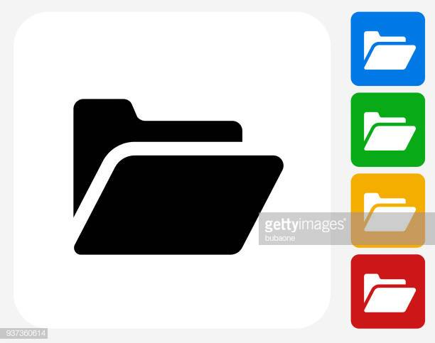
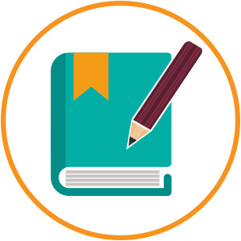
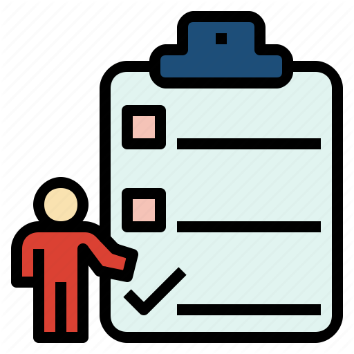

Guia de usuario:
Equipo de trabajo
Forma tu equipo de trabajo para poder crear proyectos. |
ProyectoEn el menu lateral se tiene la opcion "Proyectos", aqui podrás crear tus proyectos dando click sobre "Nuevo Proyecto". Si ya existen proyectos se presentará una lista de los mismos con dististas herramientas que te permitirán; visualizar detalles, eliminar y asignar actividades a cada proyecto. |
ActividadesPara crear actividades, podrás ir al icono "Asignar Actividades" dentro de la columna "Herramientas" ubicado en el listado de proyectos. Mediante el icono "Ver detalles" podrás visualizar los detalles de tus proyectos; informacion de cada proyecto y su respectiva lista de actividades. |
GU.GOCreadoresJulio González Pallojulio.gonzalez@epn.edu.ec Alexandra Gualotuña Fernándezalexandra.gualotuna@epn.edu.ec |
TareasCada actividad tendrá una lista de tareas, las cuales podrán ser creadas mediante el icono "Asignar tareas" ubicado en la tabla de actividades. A cada tarea se le va asignar una persona encargada y mediante el uso del icono "Evidencia" podrás verificar si la tarea fue o no cumplida. |
|
Cronograma
En el menu lateral se tiene la opcion "Cronograma", aqui podrás observar las fechas de entrega de todos tus proyectos. Además, cada fecha indica los días restantes para la culminación del proyecto y el porcentaje de avance mediante el uso de colores. |
NotificacionesEn la parte superior derecha se tiene el icono "Notificaciones", aquí podrás visualizar las notificaciones generadas acerca de eventos significativos como los tiempos restantes de un proyecto, actividades asignadas y culminación de un proyecto. |
ChatEn el menu lateral se tiene la opcion "Chat", aquí podrás comunicarte con las personas que estén dentro de tu equipo de trabajo. |